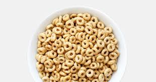
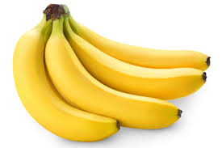

These are mashed potaoes, if I had to choose one food to great for the rest of my life it would be mashed potatoes
This is a bowl of cereal. Ive loved cereal since I was a child and I always will.
These are Bananas. Bananas are an absoulute great snack and I could eat a whole pack in a day.